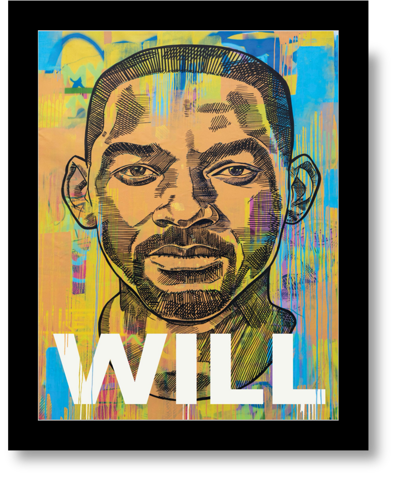
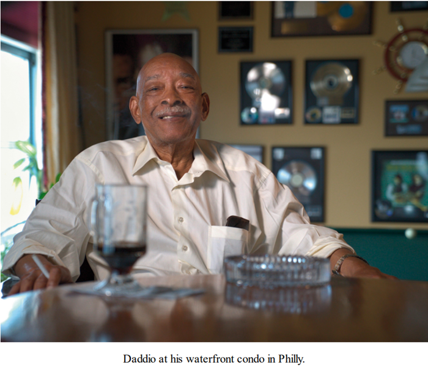
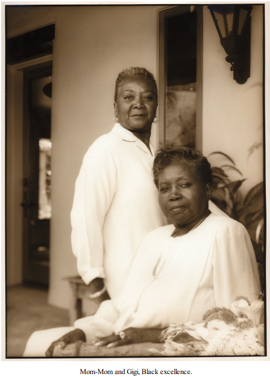
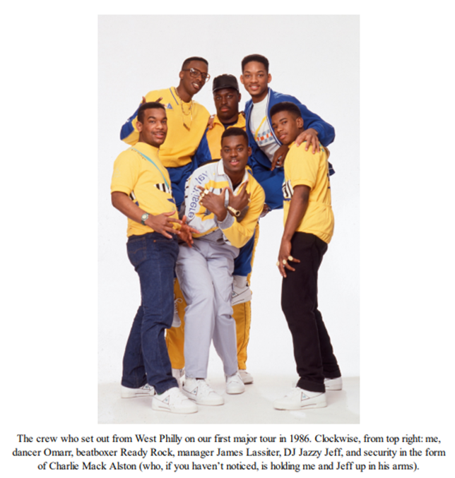
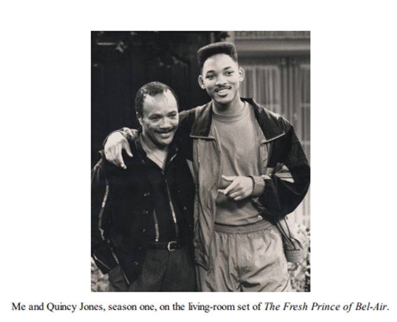
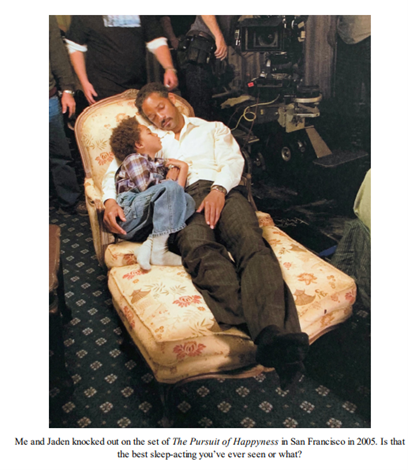
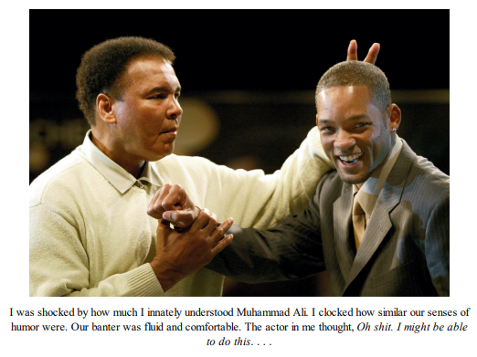
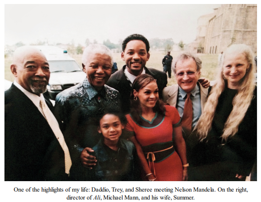

Book Analysis: Will by Will Smith & Mark Manson

We will kick off our new book by delving into the story of one of the most resilient individuals on the planet, who openly acknowledges his vulnerabilities.
Will Smith and Mark Manson have co-written an engaging biography, spanning 21 chapters that delve into the spectrum from fear to love. The essence of their message revolves around the concept of love: It's effortless to show affection when things go your way, but the real test lies in how you respond when faced with challenges or hurt.
Book Summary:
Will commenced his narrative with his father Daddio and concluded it with himself. Now, let's embark on this journey Smith-style by showcasing images of his friends and family.

Daddio, a man with military training, firmly believes in the importance of discipline. To him, every task is a matter of life and death. He frequently emphasizes that 99% effort is as good as 0, a belief that deeply influenced young Will Smith. One of the first lessons he imparted to him was the importance of concentrating on small steps to attain significant outcomes, demonstrated when he assigned the task of building a wall to Will and his older brother, instructing them to focus on laying one brick at a time.
Will was simultaneously afraid of his father due to his frequent anger and domestic violence. He felt it was his duty to bring happiness to his family through his jokes, which eventually led to his passion for entertaining others.

The protagonist's life was greatly influenced by two women. His grandmother, affectionately called Gigi, was a devout believer in God and viewed serving the poor as her duty. She imparted to him the importance of love and how to assess one's actions based on this principle.
His mother, known as Mom-Mom, instilled in him the value of education and emphasized its significance as the most powerful tool for survival with dignity in the world. She herself was an avid reader and often recommended impactful books to him, one of his favorites being "The Alchemist".
Together, these three individuals laid the groundwork for his formative years, teaching him the three fundamental lessons of discipline, love, and education. Their influence shaped his understanding of the world and his approach to life.
The Fresh Prince:

The pair that transformed the rap scene in the 1980s was none other than the group that launched the careers of numerous artists, including the legendary Fresh Prince and DJ Jazzy Jeff. Their groundbreaking work led them to clinch the very first Grammy award in the rap category, setting a new standard for the genre. However, as their fame grew, so did their egos, ultimately leading to the disbandment of their once-unstoppable team.
Despite the dissolution of their partnership, this marked not the end, but a new beginning for our protagonist. The breakup served as a catalyst for the next chapter in their journey, paving the way for fresh opportunities and creative endeavors. While the era of Fresh Prince and DJ Jazzy Jeff may have come to a close, it was merely a stepping stone towards the continued evolution of their individual careers in the ever-evolving landscape of the music industry.
Entry in Hollywood:

Will Smith's entry into Hollywood can be attributed to Quincy Jones, despite the fact that he initially gained fame through his role in the popular TV show The Fresh Prince of Bel-Air. This comedy series revolved around a character based on Will Smith himself, serving as a stepping stone for his acting career.
Quincy Jones played a pivotal role in guiding Will Smith towards a successful career in Hollywood, ultimately leading him to become a prominent figure in the entertainment industry. While The Fresh Prince of Bel-Air showcased Smith's talent and charisma, it was his collaboration with Quincy Jones that opened doors for him to explore new opportunities and establish himself as a versatile actor.
Family:
Will has been married twice in his lifetime. His first spouse was Sheree, with whom he shares two children named Trey and Willow. Jaden, the well-known Hollywood star from "The Karate Kid," is the offspring of his second marriage to Jada. Despite the complexity of the situation, Will strived to create an ideal family dynamic, ultimately encountering numerous personal challenges along the way.
Will's journey through two marriages and the complexities of blending families highlights the intricate nature of personal relationships. His efforts to navigate the intricacies of family life, while striving for perfection, underscore the challenges that can arise when trying to balance personal aspirations with the realities of human connection. Will's experiences serve as a reminder that even in the pursuit of an ideal family, one must confront and address the complexities and difficulties that can arise along the way.

Jaden excelled in acting during his early childhood, while Willow found success in her own genre of singing. However, after a few public performances, Willow expressed a desire to stop, which Will struggled to comprehend. This misunderstanding led to a shocking incident that had a profound impact on his behavior.
Out of the three siblings, Jaden found early success in acting, while Willow carved out her own path in the music industry. Despite her initial success, Willow's decision to step back from public performances caused a rift between her and Will, ultimately leading to a significant incident that had a lasting effect on his behavior. Here is what they said during that scuffle:
Good morning, Daddy,” Willow said joyfully, as she bounced to the refrigerator. My jaw nearly dislocated, dislodged, and shattered on the kitchen floor:
My world-dominating, hair-whipping, future global superstar was totally bald.
Does it matter to you how I feel?” would have sounded something like this: Not exactly, sweetheart—feelings are seventh on my list.
1. Food 2. Shelter 3. Security 4. Intelligence 5. Strength 6. Productivity
When people are too worried about how they feel, they’ll never feel how they want to feel. Willow’s act of protest kicked off a period in our family that I refer to as “the Mutiny.”
Some other personalities that influenced his life:


Will Smith had the privilege of encountering two of the most influential figures of the 20th Century, Muhammad Ali and Nelson Mandela. His initial reluctance to portray Ali in the 2003 movie "Ali" stemmed from doubts about doing justice to the legendary boxer's character. However, after meeting Ali in person, Smith was motivated to fully embody the essence of Ali's persona on screen.
It was during the filming of "Ali" that Will Smith also had the opportunity to meet Nelson Mandela. The encounter left a lasting impact on Smith, as he was deeply moved by Mandela's remarkable composure and unwavering sense of peace. The interactions with both Ali and Mandela undoubtedly left a profound impression on Smith, shaping his perspective and inspiring him in his own personal and professional endeavors.
Spiritual Journey:
After attaining considerable success, including an 8-week streak as the number 1 movie, as well as fame and wealth, he continued to experience a sense of emptiness and an insatiable desire for more. Recognizing that this pursuit would never lead to true fulfillment, he sought to break this cycle by embarking on a 14-day Vipassana retreat and participating in the Ayahuasca ceremony 14 times. Both experiences provided him with a different, profound sense of fulfillment and tranquility in his life.
Despite his achievements and material wealth, he found himself yearning for something more meaningful. It was through the practice of Vipassana and the Ayahuasca ceremony that he was able to find a new sense of contentment and peace. These experiences offered him a different perspective and a deeper understanding of what true fulfillment means, ultimately leading him to a more balanced and harmonious way of living.